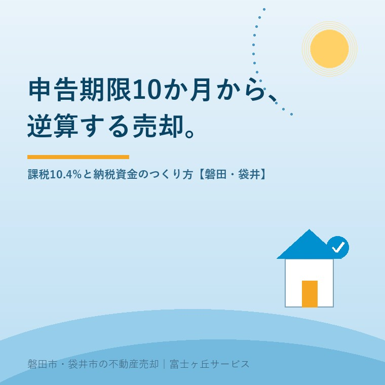

2026年8月13日｜カテゴリ：コスト・税・制度／売却実務

この記事の要点
Q. 春に父が亡くなりました。「相続税は10か月以内」と聞きましたが、うちに相続税がかかるのかも分かりません。実家を売って納めることになるなら、いつまでに動けばいいですか。
A. 最初にすることは、売却の相談ではなく「かかるかどうか」の判定です。相続税がかかるのは、遺産の総額が基礎控除＝3,000万円＋600万円×法定相続人の数を超える場合。国税庁の令和6年分の集計では、亡くなった方160万5,378人のうち相続税額のある申告に係る被相続人は16万6,730人で、課税割合は10.4％（過去最高）でした。10人に1人です。かかる場合、申告も納付も「亡くなったことを知った日の翌日から10か月以内」、しかも原則は現金一括。ここが実家売却の時計になります。ただし10か月は「お金を用意し終える日」なので、売却で納めるなら実質の判断期限は7〜8か月目です。磐田市・袋井市・森町では、介護施設の運営から不動産事業を始めた富士ヶ丘サービスのような「介護×不動産」専門の会社に相談するという選択肢があります。
お盆です。今日、実家に集まったご家族の中に、この春に親御さんを見送った方がいらっしゃるかもしれません。
その方に、いちばん申し上げたいことがあります。相続の手続きの中で、唯一「待ってくれない」のが税金です。登記は令和9年3月まで、遺産分割には10年の物差しがある。けれど相続税だけは10か月で、しかも現金で払えと言われます。
そして実務でつらいのは、「10か月あるから大丈夫」と思っていた方が、8か月目に慌てて売り急ぐことです。今日は、その逆算の話をします。2026年8月13日時点で国税庁が公表している内容に沿って整理します。
国税庁が公表した令和6年分の相続税の申告事績は、次のような数字でした。
| 項目 | 令和6年分 |
|---|---|
| 被相続人数（死亡者数） | 1,605,378人 |
| 相続税額のある申告書の提出に係る被相続人数 | 166,730人 |
| 課税割合 | 10.4％（前年から0.5ポイント上昇・過去最高） |
| 課税価格の総額 | 23兆3,846億円 |
| 税額の総額 | 3兆2,446億円 |
| 被相続人1人当たり | 課税価格1億4,025万円／税額1,946万円 |
課税割合が上がり続けているのは、地価と株価の上昇が大きな理由です。相続税の土地の評価に使う路線価も、令和8年分は全国平均で前年比＋2.9％と5年連続の上昇（現在の算定方式となった2010年以降で最大の伸び）でした。財産の中身は変わっていないのに、評価額だけが上がって課税ラインを越えるというご家庭が、確実に増えています。
相続税がかかるかどうかの入口は、基礎控除です。
基礎控除額 ＝ 3,000万円 ＋ 600万円 × 法定相続人の数
遺産の総額（プラスの財産から借入金・葬式費用などを引いた額に、一定の生前贈与を加えたもの）が、この金額以下なら、原則として相続税の申告は不要です。
| 法定相続人の数 | 1人 | 2人 | 3人 | 4人 | 5人 |
|---|---|---|---|---|---|
| 基礎控除額 | 3,600万円 | 4,200万円 | 4,800万円 | 5,400万円 | 6,000万円 |
磐田市・袋井市の平均的なご家庭を考えてみます。実家の土地建物が1,500万〜2,500万円、預貯金が1,500万円、生命保険と有価証券が少々。相続人が母＋子2人の3人なら基礎控除は4,800万円です。多くの場合、ここで「かからない」となります。
ただし、越える方には共通点があります。
「うちは田舎だから関係ない」は、いま最も危ない思い込みです。不動産は、現金と違って自分で数えられません。まずは評価してみることです。実家に4つの値段がある話は実家の値段は「4つ」ある。2026年路線価の公表を機にに書きました。
相続税がかかると分かったら、時計が動き始めます。国税庁の説明では、相続税の申告と納税は、被相続人が死亡したことを知った日（通常は死亡の日）の翌日から10か月以内です。納付の期限も同じ10か月。申告だけ出して納税を待ってもらう、はできません。
| 期限 | やること | 2026年3月1日に亡くなった場合 |
|---|---|---|
| 3か月 | 相続放棄・限定承認の申述 | 2026年6月1日 |
| 4か月 | 準確定申告（亡くなった年の所得税） | 2026年7月1日 |
| 7〜8か月 | 【実務】売却で納めるなら、ここが判断の締切 | 2026年10〜11月ごろ |
| 10か月 | 相続税の申告・納付（現金一括が原則） | 2027年1月1日（休日なら翌開庁日） |
| 3年10か月 | 取得費加算の特例が使える譲渡の期限 | 2029年12月末ごろ |
| 令和9年12月31日 | 空き家の3,000万円特別控除の適用期限 | 2027年12月31日 |
この表でいちばん大事なのは、4行目です。「10か月」は納め終える日であって、売り出す日ではありません。
磐田・袋井の戸建てや土地を仲介で売る場合、当社の実感でおよそ売り出しから成約まで3〜6か月、成約から決済（入金）までさらに1〜2か月かかります。合計すると4〜8か月。
つまり、10か月後に現金を手にしているには、遅くとも3〜4か月目には売り出しを始めていないと間に合いません。そして売り出す前には、遺産分割協議、相続登記、境界確認、残置物の片づけがあります。「10か月あるから」ではなく「準備に半分持っていかれる」と考えてください。
それでも遅れたら、買取という選択肢があります。当社を含む不動産会社が直接買う方法で、3週間〜1か月半で現金化できます。ただし価格は相場のおおむね7〜8割。その損得の分岐点は実家の「買取」はなぜ7〜8割なのかに詳しく書きました。納期に間に合わせるための2〜3割と考えれば、合理的な選択になる場面はあります。
ここが、実務で最も損が出るポイントです。
遺産分割がまとまっていなくても、申告期限は延びません。その場合、いったん法定相続分で取得したものとして計算し、申告・納税することになります。問題は、この状態では大きな特例が使えないことです。
| 特例 | 内容 | 未分割だと |
|---|---|---|
| 配偶者の税額軽減 | 配偶者が取得した財産のうち、1億6,000万円と配偶者の法定相続分相当額のいずれか多い金額まで相続税がかからない | 使えない |
| 小規模宅地等の特例 | 特定居住用宅地等は330㎡まで評価額80％減（特定事業用400㎡・80％減／貸付事業用200㎡・50％減） | 使えない |
この2つが外れると、納税額は跳ね上がります。自宅の土地が2,000万円なら、小規模宅地等の特例が使えれば400万円の評価。使えなければ2,000万円のまま計算します。
救済はあります。申告書に「申告期限後3年以内の分割見込書」を添付しておくと、申告期限から3年以内に分割がまとまれば、この2つの特例を適用できるようになります。そのうえで、分割があったことを知った日の翌日から4か月以内に更正の請求をして、納めすぎた税金を返してもらう流れです。
覚えておいていただきたいのは、「いったん多く払う」現金が要るという事実です。特例が使えていれば0円だったご家庭が、未分割のせいで数百万円を10か月目に用意する。あとで戻るとしても、その日に払えなければ意味がありません。10か月で最優先すべきは、分け方をまとめることです。
祖父名義のままで相続人が10人──というご家庭は、まずここが山場になります。同じ日に公開した祖父名義のままの実家に、相続人が10人──お盆の三日間で始める数次相続の整理もあわせてお読みください。
現金一括が原則。では、その現金をどうつくるか。選択肢は実質4つです。
| 方法 | 向いている場合 | 注意点 |
|---|---|---|
| ①預貯金から払う | 金融資産が十分にある | 凍結された口座の解約に、遺産分割協議書と戸籍一式が必要。着手は早めに |
| ②不動産を売って払う | 財産の多くが不動産 | 時間がかかる。10か月から逆算した段取りが要る |
| ③延納（分割払い） | 売り急ぎたくない | 相続税額が10万円超／金銭で納付することが困難な事由があり、その困難な金額の範囲内／原則担保の提供（延納税額100万円以下かつ延納期間3年以下なら担保不要）／利子税がかかる／申請は申告期限まで |
| ④物納（現物で納める） | 延納でも納付が困難 | 要件が厳しく、物納に適さない財産（境界不明・係争中など）は認められにくい |
③の延納は「申告期限までに申請」です。10か月目に「払えません」と言っても、そこから延納は選べません。払えないかもしれないと思った時点で、税理士に相談してください。
財産構成の統計を見ると、この悩みの根っこがよく分かります。令和6年分の相続財産の金額構成比は、現金預貯金等34.9％、土地30.2％、有価証券17.8％、家屋4.8％、その他12.3％。およそ3分の1が土地と家屋です。納税は現金でしかできないのに、財産の3分の1は動かすのに数か月かかる。相続税が「不動産の税金」と呼ばれる理由がここにあります。
実家を売る前に、必ず確認していただきたい特例が2つあります。順番を間違えると、使えたはずのものが使えなくなります。
相続税を納めた方が、相続開始のあった日の翌日から相続税の申告期限の翌日以後3年を経過する日まで（いわゆる3年10か月）に相続財産を売却した場合、納めた相続税のうち、その財産に対応する分を取得費に加算できます。譲渡所得が減り、所得税・住民税が下がります。
親が買った値段が分からない実家では、売却代金の5％しか取得費にできない「5％問題」が起きます。この特例は、その痛みを和らげてくれます。詳しくは相続した実家を売ると税金はいくら？「5％問題」と3年10か月の特例をご覧ください。
こちらは相続税がかからなかった方にも関係します。一定の要件を満たすと、譲渡所得から最高3,000万円を控除できる制度です。
この2つは、併用できません（取得費加算の特例と空き家の3,000万円控除は選択適用）。どちらが有利かは金額次第なので、売り出す前に税理士へ試算を依頼してください。期限の数え方には落とし穴があります。「2027年まで」で安心していませんか｜空き家3,000万円控除、期限の数え方の落とし穴もご確認ください。
そして忘れがちなのが、売却にかかる諸費用です。仲介手数料、印紙税、抵当権抹消、測量、固定資産税の清算。売値ではなく手取りで考える実家の売却の早見表で、納税に回せる金額を先に計算しておいてください。
地域の事情を、正直に書きます。
もうひとつ。相続税がかかるご家庭では、税理士の関与がほぼ必須です。土地の評価は、間口・奥行・不整形・道路との高低差・セットバックなどで大きく変わります。相続税に慣れた税理士かどうかで、納税額が数百万円変わることは珍しくありません。当社では、地元で相続案件を数多く扱っている税理士をご紹介しています。
当社は、磐田市見付で介護施設を運営するところから不動産の仕事を始めました。ですから、ご相談は「亡くなってから」ではなく、その手前から始まることが多いのです。
相続税がからむご相談で私たちが最初にするのは、「いつまでに、いくらの現金が必要か」を1枚の紙にすることです。税額の計算は税理士の仕事ですが、その金額をつくるために、どの不動産を、いつ売り出し、いつ決済するか──ここは不動産会社の仕事です。
そのうえで、私たちは「全部売る」ことをお勧めしません。納税に必要な分だけを、動きやすい物件から。残すべき土地は残す。10か月という締切に、家族の判断を全部合わせてしまわないことを大切にしています。
目指しているのは、高く売ることだけではなく「家族が困らない売却」です。事実の整理にはふじがおか実家カルテを、相続の全体像は相続はじめ相談室を、実家の片づけと処分は実家じまい相談室をお使いください。
10か月は、長いようで短い。けれど、最初の1か月で「かかるのか、いくらか、いつまでに現金が要るのか」を押さえてしまえば、残りの9か月は落ち着いて売れます。売り急いだ実家は、必ず安くなります。逆算だけが、それを防いでくれます。
ふじがおか実家カルテ｜「10か月でいくら必要か」から逆算します
まず、何を、いつ売るかの順番を。
住所や固定資産税の納税通知書をもとに、実家の想定売却価格・売却にかかる期間・手取りの目安・農地や調整区域の有無を整理し、納税期限から逆算した動き方を1枚にしてお出しします。作成料0円・入力約1分。申込みだけで売却依頼にはなりません。
本記事は2026年8月13日時点で国税庁が公表している情報に基づく一般的な解説であり、個別の税額・特例の適用可否を保証するものではありません。相続税がかかるかどうか、また税額は、財産の評価・法定相続人の範囲・生前贈与の有無・各種特例の適用可否により大きく異なります。本文中の売却期間（仲介4〜8か月・買取3週間〜1か月半）は当社が磐田市・袋井市で扱った案件からの目安であり、物件・時期により変動します。取得費加算の特例と空き家の3,000万円特別控除は選択適用であり、要件・手続き・添付書類の詳細は必ず税理士または所轄税務署へご確認ください。延納・物納の可否と手続き、分割見込書・更正の請求の期限管理も税理士へご相談ください。相続登記は司法書士、遺産分割の争いは弁護士、農地の売買・転用は各市町村の農業委員会が窓口です。個別のご相談は当社までどうぞ。

この記事を書いた人：大石浩之（宅地建物取引士）
磐田市・袋井市・森町で「介護×相続×空き家」に特化した不動産売却支援を行う富士ヶ丘サービスの代表取締役・宅地建物取引士。介護施設の運営から不動産事業を始めた経験をもとに、売主とご家族が困らない売却を一件ずつお手伝いしています。プロフィール
磐田市・袋井市・森町の実家じまい・相続空き家相談
固定資産税通知書だけでも相談できます
住所があいまいでも、通知書や写真から名義・道路・農地・残置物の確認順を整理します。カルテ申込またはLINEで状況を送ってください。
富士ヶ丘サービス株式会社／静岡県磐田市見付5789番地1／TEL:0538-31-3308／静岡県知事 (2) 第14083号／代表取締役・宅地建物取引士 大石 浩之